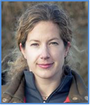

The OntoSoft project is offering training sessions for geoscientists to learn best practices in software and data sharing, provenance documentation, and scholarly publication. These training sessions will be offered in different modalities throughout 2015. Training materials are freely available on line in this web site.
Please subscribe to this mailing list if you would like to receive notifications of training sessions and other general announcements about GPF.
There is no registration fee to attend these training sessions. To RSVP, please email us with your name, institution, and training session date.
The training sessions (webinars and face-to-face) are all free of charge, but please register by emailing us. Additional webinars and sessions will be announced in this site and in the GPF general mailing list.
The training sessions are 3.5 hours, including a 30min break in the middle.
Additional training sessions will be offered at community events and institutions upon request. Please contact us to inquire, or to help us arrange a session in your institution.
Please subscribe to this mailing list if you would like to receive notifications of training sessions and other general announcements about SPF.
Additional training sessions will be offered upon request at community events and institutions. Please contact us to inquire.
Please subscribe to this mailing list if you would like to receive notifications of training sessions and other general announcements about GPF.
The training sessions have been attended by diverse audiences with different motivations:
The training sessions do not assume any programming or computer science background. They begin teaching concepts, principles, and best practices, and then give practical recommendations and pointers to resources to implement them.
The training is divided into two sessions, each 90mins with a break in the middle. Training topics are listed below.
| Topic | Concepts covered |
|---|---|
| Scientific publications in the future | An overview of the benefits of augmenting papers with data, software, and provenance, all properly documented and cited |
| Making data accessible | How to publish data in a public shared repository, select and use a license, and cite it in an article |
| Making software accessible | How to publish software in a public repository, select and use a license, and cite it in an article |
| Describing software with metadata | How to describe general metadata about software so others can understand and use it |
| Describing the provenance of results | How to describe provenance in terms of the computations that were executed in order to obtain the results reported in a paper | Describing methods as workflows | How to describe general computational methods in a paper as data flow across software components |
For each training topic, basic concepts and best practices are introduced. A summary at the end provides specific advice and pointers to implement those best practices.
|
Cedric David Jet Propulsion Laboratory California Institute of Technology |
Ibrahim Demir IIHR Hydroscience & Engineering Institute University of Iowa |
||
|  |
Robinson W. Fulweiler Department of Earth and Environment Department of Biology Boston University |
 |
Yolanda Gil Information Sciences Institute and Department of Computer Science University of Southern California |
 |
Chris Mattmann Jet Propulsion Laboratory California Institute of Technology |
Ji-Hyun Oh Jet Propulsion Laboratory California Institute of Technology |
|
 |
Scott Peckham Institute of Arctic and Alpine Research University of Colorado at Boulder |
 |
Suzanne Pierce Texas Advanced Computing Center and Jackson School of Geosciences University of Texas Austin |
 |
Varun Ratnakar Information Sciences Institute University of Southern California |
 |
Erin Robinson Foundation for Earth Science |
 |
Mimi Tzeng Data Management Center Dauphin Island Sea Lab |
Sandra Villamizar Sierra Nevada Research Institute University of California at Merced |
|
 |
Xuan Yu Department of Geological Sciences University of Delaware |